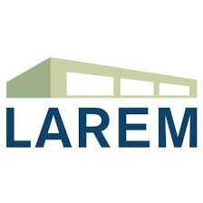
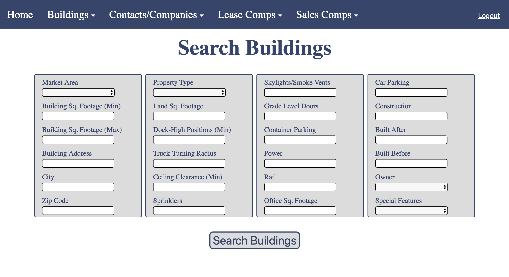
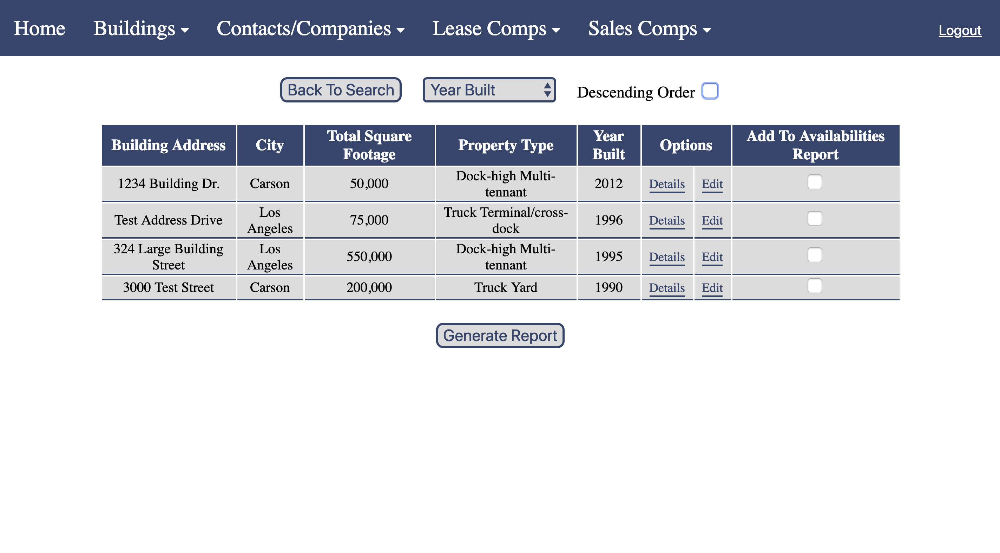
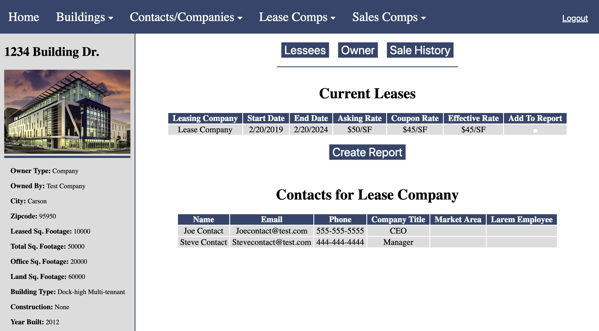
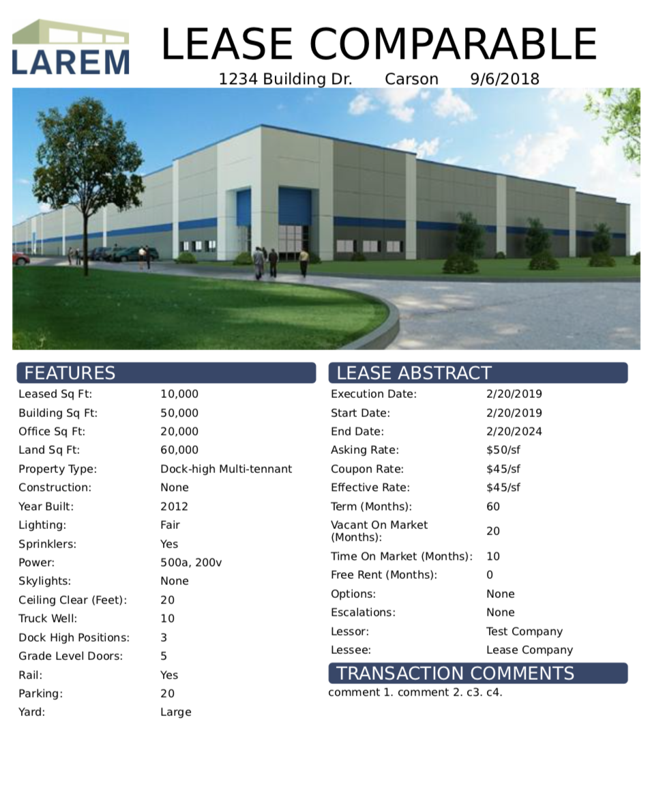

<div class="background">
	<div class="projectContainer">
		
		<h2 class="projectTitle">Building Management System</h2>
		<div class="techIcons">
			
			
			
			
			
		</div>
		<h3 class="date">September 2018 - Present</h3>
		<div class="description">
			<div class="text">
				<h3 class="reflectionTopic">About</h3>
				<p>This project is one I am currently working on as a freelance fullstack web developer. It is a system that enables LAREM Inc. to track building information, lease records, sale histories, current owners and more.</p>
				<h3 class="reflectionTopic">Responsibilities</h3>
				<ul class="rList">
					<li>Structuring MongoDB Database</li>
					<li>Creating REST API with Node.js and ExpressJS</li>
					<li>Designing frontend application with Angular</li>
					<li>E2e testing</li>
				</ul>
				<h3 class="reflectionTopic">Note</h3>
				<p>The full code for this project can be found on <a href="https://github.com/MattyJ10/LaremDBInterface" target="_blank">GitHub</a>. The data in the screenshots below is test data in order to preserve privacy.</p>
			</div>
		</div>
		<div class="features gray">
			<h1 class="header">What I've Done</h1>
			<div class="feature gray">
				
				<div class="featureDesc rightText">
					<i class="fa fa-search" aria-hidden="true"></i>
					<p>Built an efficient search mechanism covering a broad array of criteria</p>
				</div>
			</div>
			<div class="feature">
				<div class="featureDesc leftText">
					<i class="fa fa-table" aria-hidden="true"></i>
					<p>Displayed search results instantly and made them sortable by a number of variables</p>
				</div>
				
			</div>
			<div class="feature gray">
				
				<div class="featureDesc rightText">
					<i class="far fa-eye"></i>
					<p>Designed page to view one building's specifications as well as current leases, associated contacts, sale history, current owner and more</p>
				</div>
			</div>
			<div class="feature">
				<div class="featureDesc leftText">
					<i class="fas fa-hand-pointer"></i>
					<p>Implemented PDF report generation on buildings, leases, sales and more in one-click</p>
				</div>
				
			</div>
		</div>
		<div class="reflection">
			<h1 class="header blue">What I've Learned</h1>
			<div class="description">
				<div class="text margBot">
					<h3 class="reflectionTopic">Think At Scale</h3>
					<p>I am responsible for every line of code and every design decision which has taught me to consider scaling and what issues could arise if more users are involved.</p>
					<h3 class="reflectionTopic">Security</h3>
					<p>The data stored on this application is a goldmine of building statistics and history that any real estate firm would want to get their hands on. I have spent time learning about common vulnerabilities in web applications as well as best practices for server security.</p>
					<h3 class="reflectionTopic">Communication</h3>
					<p>I have further developed my communication skills by meeting with clients and discussing what problems they have. I worked with them to identify current organizational inefficiencies and presented tactical solutions.</p>
				</div>
			</div>
		</div>
	</div>
</div>
